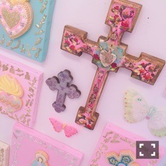

| 2016/10 03 Mon | 斎藤ちはる ブーム(´>∀<｀)ゝ |
ちはるーむへようこそ！
モバメでは散々言ってるんだけど
私にタピオカブームが
舞い降りてます(﹡ˆ ˆ﹡)
タピオカ！！
ミルクティー！！
前もずっと好きだったけど
タピオカの為だけに
駅に降りて向かって
タピオカの為だけに
買って帰るっていう時間の使い方をしているくらい！
本当私はとことんハマる人なので。
今もスコーンは好きだけど
毎日食べていたあの時期よりは流石に
おさまりました！
今度はタピオカブームがきそう。
毎日1杯ペースになる前に
少し落ち着かなければ。。笑
真夏元気かな〜
タピオカとか好きかな〜
オススメのお店とか知らないかな〜笑
-------------------------♡
芸術の秋！ということで。

個展とか展示会巡りとか行きたい〜
写真展とか美術館とか諸々。
オススメのある方教えてほしいな(﹡ˆ ˆ﹡)
色んなものを見て
色んな世界観を見て
視野を広げたい！
色んな世界を知ると
新たな何かを得られる気がするから。
家のなかにいて寝るのも好きだけど
どうしても外に出たくなる。
私が外に出向く理由です( ˘ω˘ )
-------------------------♡
♬ ChihaMusic
「LOSER」米津玄師さん
米津玄師さんの新曲！！
クセになる〜
サビのテンポがいい。
歌詞も何かに追われて
負けたくない変わりたいっていう
気持ちを私は感じて
頑張らなきゃな〜って思った！
ヘビロテしてます。
今日もChihAnswer募集します！
質問してください〜
待ってます\( ˆoˆ )/
NOGIBINGO!7も着々と
収録していってます！
また新たなメンバーの一面見られます！
見てね〜♪
おやすみ！
斎藤ちはる